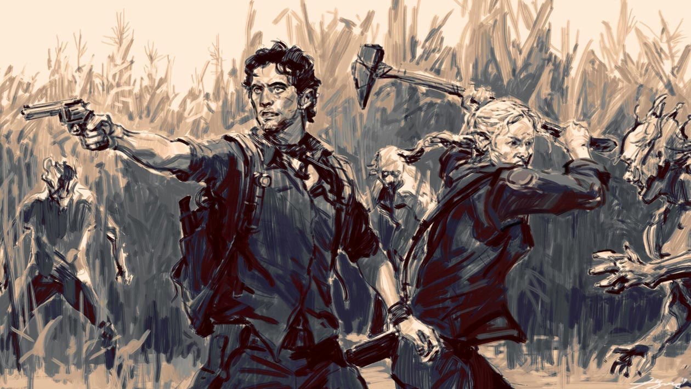
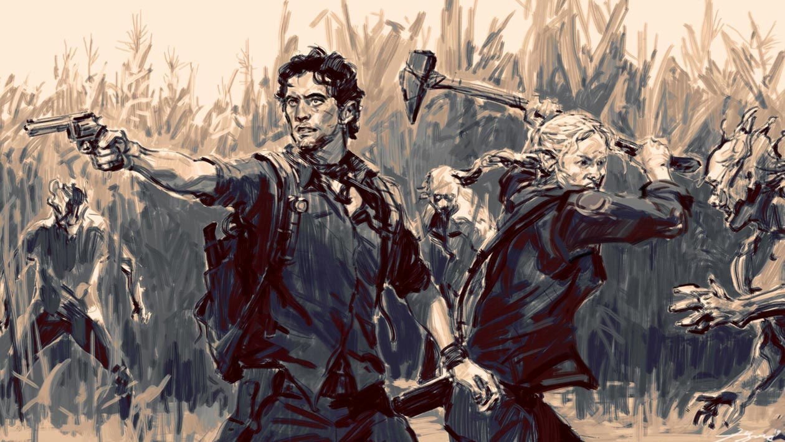

Moje oblíbené hry
Těchto čtyř her si cením nejvíc – spojuje je nejen skvělá hratelnost, ale i výborný soundtrack, který dotváří atmosféru.
Žánrově mi sedí perfektně. Baví mě hlavně sci-fi, zombie tématika a střílečky obecně. Samozřejmě mám rád i další styly, ale tohle je zatím základ mého herního vkusu.
 
